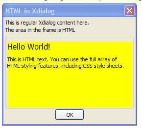

Embedded HTML in Xdialog
It is now even easier to embed HTML into Xdialog. Previously, you had to define and place the Internet Explorer ActiveX control in your Xdialog. Now, you simply use the new {html}, or {htmlIE} command.
Example Using {html}
The script below uses the command:
{html=50,10test}
This indicates that we want to create a window that is 50 'characters' wide and 10 'lines' high, and display the HTML content that is stored in the variable called 'test' which is defined in the script.
For example:
htest = <<%html%
<html>
<body style="font-family:tahoma;font-size:8pt;background-color:#ffff00;">
<span style="font-size:12pt;"> Hello World!<span>
<p>This is HTML text. You can use the full array of HTML styling features, including CSS style sheets.</p>
</body>
</html>
%html%
ui_dlg_box("HTML in Xdialog",<<%dlg%
This is regular Xdialog content here.;
The area in the frame is HTML;
{frame=1,1}
{html=50,10htest};
{justify=center}
<10OK>;
%dlg%)

The {html} and {htmlIE} commands are similar but have some important differences. The {html} command uses Alpha Five's built-in HTML rendering engine. It is extremely fast and lightweight, but does not support Javascript, and does not give you access to the HTML DOM. The {htmlIE} command uses Internet Explorer as its rendering engine, and does support Javascript and does give you access to the DOM.
These two commands will allow you to create visually stunning Xdialogs. In particlar, the {htmlIE} control is extremely powerful because you can incorporate third-party open source Javascript libraries, such as JQuery, to add a vast array of features and visual effects to your Xdialogs.
Xbasic Event Handlers for the {html} Command
You can attach Xbasic event handlers for some of the standard DOM events in the HTML displayed in the {html} control. The following example shows some HTML with events. Notice a) the event names all have 'a5:' prefixes and b) 'div' are not 'clickable' by default. It is necessary to add a special 'style' attribute in order to make the div clickable.
dim html as c
html = <<%html%
<div a5:on
style="behavior: clickable;font-family: tahoma; font-size: 8pt; background-color: #ffffff; border-style: solid; border-width:
1px; border-color: #a0a0a0;">
<img style="vertical-align:middle;"
src="a5res:images/$$file.save.png" />Some text inside a DIV
</div>
<p>
<button a5:on
style="font-family: tahoma; font-size: 8pt;">Button</button>
%html%
dim p.object as p
dim p.dom as p
ui_dlg_box("Test",<<%dlg%
{html=100,10html};
%dlg%,<<%code%
%code%)
function divClick as c ()
ui_msg_box("Notice","You clicked on a DIV")
end function
function button
ui_msg_box("Notice","You clicked on a Button")
end function
Example Using {htmlIE}
When you use {htmlIE} you first need to define an arbitrarily named dot variable. The dot variable must have an .html property that contains the HTML to display. It can also have two optional properties:
- .dom - define this property if you want to get access to the DOM so that you can manipulate the DOM using Xbasic.
- .options - define this property if you want to set options. The only option currently supported is '.loadA5Core'.
If you set options.loadA5Core to .t., {htmlIE} loads the Alpha Five Core Javascript Library. By default, this property is set to .f.. Loading Alpha Five Core gives you access to certain library functions such as:
- $() - get a pointer to an element
- $gvs() - get the value of an element
- $svs() - set the value of an element
If you want to use a 3rd party Javascript library, such as JQuery, the Alpha Five library might conflict with the 3rd party library (for example, JQuery also uses the $ be default), and so you will not want to load the Alpha Five Core library.
The following example script shows how we have an HTML dialog with a button. The button's event handler is written in Xbasic.
dim p as p
dim p.html as c
dim p.dom as p 'we define this property so we can get access to the DOM
'the .options property is optional
dim p.options as p
p.options.loadA5Core = .f.
p.html = <<%html%
<b>This is some html</b>
<br>
<button on
<span id="s1"></span>
%html%
ui_dlg_box("Using HTMLIE",<<%dlg%
{htmlIE=100,20p}
%dlg%,<<%code%
if a_dlg_button = "button1" then
a_dlg_button = ""
dim obj as p
obj = p.dom.getElementById("s1")
obj.innerHTML = "Content set by Xbasic"
end if
%code%)
Notice that the HTML button's on
As you can see the Xdialog code section contains this code to handle the event:
if a_dlg_button = "button1" then
a_dlg_button = ""
dim obj as p
obj = p.dom.getElementById("s1")
obj.innerHTML = "Content set by Xbasic"
end if
When the user clicks the button, the Xbasic event handler gets a pointer to the span in the HTML. The span has an id if "s1". We use the standard Javascript .getElementById() method.
Font Inheritance
The html that is shown using the {html} command will inherit the Xdialog ambient font. So for example, if the Xdialog ambient font has been set to Tahoma, 10 pt, blue, then the html that is shown using the {html} tag will use those font settings. Of course, if the html that is shown has explicit class and/or style attributes, the html will honor those attributes.
You can force the displayed HTML to not inherit the ambient Xdialog font by inserting an <html> </html> tag pair into the html.
For example:
dim html as c html = "This is some HTML text - S61;23.20"
dim html2 as c
html2 = <<%html%
<html>
<body>
This is some HTML text.
</body>
</html>
%html%
ui_dlg_box("Ambient font test",<<%dlg%
{font=courier new,10}
{color=red}
Xdialog ambient font color is now red.;
Font in embedded html should use the ambient font \(i.e. text should be be red).;
Text to right of colon is embedded html: {html=50,3html};
{lf};
Text to right of colon is embedded html, but the html has an \<html> tag.; Therefore, the HTML does not use the ambient
font: {html=40,3html2}; %dlg%)
See the sample Learning Xdialog database for examples of how to use the {html} and {htmlIE} command.
Note:If you have IE 9 or later installed, you cannot use Xbasic Active Scripting in an HTML 5 document. This limit affects the {htmlie} command and reflects the fact that Microsoft does not support Active Scripting in IE 9 Native Mode.